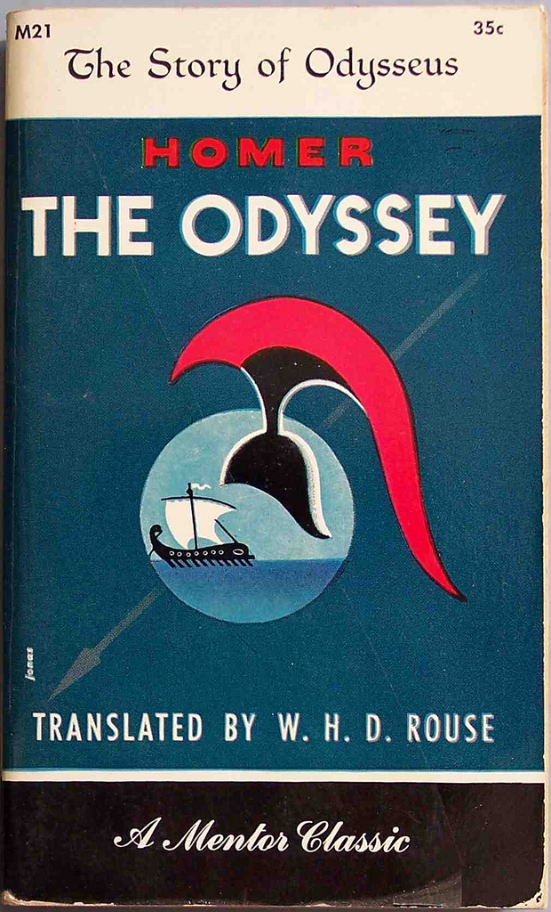

The Scarlet Letter is one of the worst books that I have ever read. The plot was extremely boring. I hated all of the characters becuase they were either unnecessarily dramatic, or just annoying in general. Hawthorne wrote the story in 1850, and as a result, none of it is written in modern english. It was very hard to understand, and even when I did understand what was happening, I did not enjoy the book. Reading the Scarlet Letter was the worst assignment ever.
Romeo and Juliet is one of the most frustrating books that I have ever read. Romeo Montague made some of the craziest, most irrational decisions that I have ever heard of. First of all, both Romeo and Juliet were still kids, which is just creepy. Second of all, the entire play takes place over the course of four days. They met, they "fell in love" and then everyone goes crazy. Why were their families even fighting anyway? Neither one of them even bothered to ask! I'm still confused as to why people compare their favorite couples to two teenagers who knew each other for less than a week and made impulsive decisions. I found the entire story ridiculous and I would never recommend it.
This book was actually interesting, and despite being written in sonnets, it was not bad. The Odyssey follows the greek hero Odysseus on his adventures after the events of the Illiad take place. It seemed very repetitive, mostly because Homer wrote in epithets. Instead of using the characters' names like a normal person, he insisted on writing "the bright eyed goddess", or something along those lines, every time he referred to a character. By the end of the book I could not care less what Athena's eyes looked like. The writing style was not my favorite, but at least the story was interesting, which is more than I can say for some of the other books on this page. The Odyssey is definitley not something that I would read for fun, but out of these three books, this is the by far the best.
